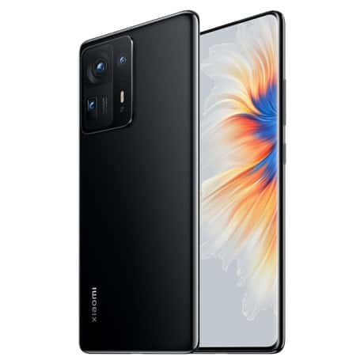

- Kết quả tìm kiếm....
-

Ipon
15.000.000.vnđ
-
Ipon
15.000.000.vnđ
Thông tin
Giới thiệu sản phẩm
Samsung Galaxy S22 Ultra 256GB - chiếc điện thoại Galaxy S đầu tiên sở hữu bút S Pen trong thân máy, được cung cấp sức mạnh bởi CPU đến từ Qualcomm, sở hữu thiết kế sang trọng, màn hình có nhiều cải tiến cùng cụm camera zoom 100x. Thiết kế khác biệt hoàn toàn thế hệ trước Samsung Galaxy S22 Ultra 256GB ra mắt với một diện mạo “cũ mà mới”, máy sử dụng form thiết kế của dòng Galaxy Note trước đây để đưa vào dòng Galaxy S. Với hai cạnh trên và dưới vát phẳng, hai cạnh bên được bo cong mềm mại. Thiết kế khác biệt - Samsung Galaxy S22 Ultra Đây cũng là một chiếc smartphone vô cùng bền bỉ khi khung viền được cấu thành từ Armor Aluminum cứng cáp, khả năng kháng bụi, nước chuẩn IP68 và đây cũng là một trong những sản phẩm được trang bị kính Corning Gorilla Glass Victus+ đầu tiên trên thị trường. Khung viền cứng cáp - Samsung Galaxy S22 Ultra Mặt lưng hoàn thiện nhám, màu sắc khá sang và có khả năng hạn chế bám vân tay tốt, máy có các phiên bản màu như: Xanh lá, đỏ rượu vang và 2 màu truyền thống là đen và bạc. Galaxy S22 Ultra cho cảm giác cầm nắm khá thích, trọng lượng vừa phải, không bị cấn tay nhưng nếu cầm trần thì cảm giác hơi dễ trượt vì kích thước máy khá là lớn. Cảm giác cầm rất tốt - Samsung Galaxy S22 Ultra Thiết kế cụm camera trên máy cũng là một điểm nhận dạng Galaxy S22 Ultra năm nay khác biệt so với dòng Note, cụm camera không còn quá lồi nữa giúp cho máy không bị kênh nhiều khi đặt trên mặt phẳng. Cụm camera trên Samsung Galaxy S22 Ultra Lần đầu tiên S Pen xuất hiện Samsung Galaxy S22 là sản phẩm dòng S đầu tiên trang bị bút S Pen bên trong máy, bút S Pen năm nay cũng đã được Samsung cải tiến nhiều về độ trễ, độ trễ rút ngắn lại chỉ còn 2.8 ms nên cảm giác khi viết trên màn hình Galaxy S22 Ultra này khá là chân thật và chính xác. S Pen đã có mặt trên Galaxy S - Samsung Galaxy S22 Ultra Tất cả các tính năng như viết, các chức năng ghi chú, Screen Note, Dịch đều giống như những gì đã có trên Galaxy Note, các cử chỉ điều khiển từ xa vẫn như trên thế hệ Note, bạn cũng có thể kích hoạt camera từ xa, chuyển đổi qua lại giữa các chế độ chụp rất nhanh chóng và chính xác. Phần giao diện dường như được cập nhật theo hướng to hơn, rõ ràng hơn. Camera độ phân giải cao, zoom cực xa Trang bị 4 ống kính với ống kính chính lên đến 108 MP, camera góc siêu rộng 12 MP, 2 camera tele cùng 10 MP hỗ trợ thu phóng quang học 10x. Năm nay Samsung đã nhấn mạnh rất nhiều qua cái câu tagline "Mắt thần bóng đêm", nhắc đến khả năng chụp đêm của Galaxy S22 Ultra. Cụm camera siêu tốt - Samsung Galaxy S22 Ultra Thật sự thì Samsung Galaxy S22 Ultra chụp thiếu sáng cực kỳ ngon, hình ảnh cực kỳ sáng, sắc nét và trong trẻo, không bị noise nhiều. Cân bằng ánh sáng tốt, các ánh đèn không bị cháy lóa như khi chụp thường, kể cả các ánh sáng phức tạp của đèn LED. Ảnh chụp trong môi trường thiếu sáng - Samsung Galaxy S22 Ultra Tương phản được đẩy lên cao, tăng độ rực rỡ cho tấm hình kể cả khi sử dụng các mức zoom 3x hay 10x thì ảnh vẫn có độ chi tiết tốt. Ảnh chụp từ camera Samsung Galaxy S22 Ultra Ảnh chụp từ camera góc thường Ảnh chụp từ camera zoom - Samsung Galaxy S22 Ultra Ảnh chụp từ camera zoom Điều kiện đủ sáng thì không có gì để chê, hình ảnh cho ra rực rỡ, khả năng xử lý khi ngược sáng rất tốt, không bị cháy lóa, hình ảnh có độ tương phản cao cộng với chi tiết cao nên khá nịnh mắt. Ảnh chụp từ camera chính - Samsung Galaxy S22 Ultra Chế độ zoom 100x hoạt động cực kỳ ổn định, zoom xa và bắt ảnh khá nhanh và tất nhiên ảnh khi zoom 100x khá là mờ, khoảng cách tốt nhất để bức ảnh còn nét là khoảng 30-40x thôi. Ảnh chụp từ camera zoom - Samsung Galaxy S22 Ultra Chế độ chân dung có vẻ đã được cải thiện nhiều hơn so với thế hệ trước với ảnh xóa phông sâu, ít bị lẹm kể cả phần khó như tóc, độ chi tiết cao, ảnh tươi sáng và màu sắc khá chân thật. Hơn nữa máy cũng hỗ trợ nhiều chế độ chụp khác để bạn khám phá. Hỗ trợ nhiều chế độ chụp - Samsung Galaxy S22 Ultra Galaxy S22 Ultra hỗ trợ quay video 8K tuy nhiên không đi kèm chống rung, nếu như bật chế độ Siêu ổn định lên thì độ phân giải sẽ bị giới hạn xuống Full HD 60 FPS. Bao nhiêu đó cũng khá đủ rồi, khung hình ổn định, ít bị giật, độ chi tiết cao và màu sắc cũng khá chân thật để chúng ta dễ dàng chỉnh sửa. Camera macro trên Galaxy S22 Ultra hoạt động khá giống với dòng iPhone 13 Pro, chỉ cần để chế độ chụp ảnh bình thường và dí sát vào vật thể thì máy sẽ tự động lấy nét và chuyển sang chụp macro. Ảnh Macro chụp từ Samsung Galaxy S22 Ultra Camera trước lên đến 40 MP nên cho hình sống ảo của chúng ta sẽ chân thật hơn bao giờ hết, da vẫn được làm mịn nhẹ nhưng các chi tiết trên da đều sẽ được tái tạo rất rõ nét. Màu sắc khá rực rỡ nên không cần áp dụng thêm bộ lọc màu nữa. Camera trước - Samsung Galaxy S22 Ultra Camera trước cũng có khả năng quay video đến 4K 60 FPS, tự động lấy nét giúp bạn quay vlog tốt hơn. Nâng cao trải nghiệm thị giác Galaxy S22 Ultra trang bị một màn hình khá lớn với kích thước 6.8 inch, tấm nền Dynamic Amoled 2X độ phân giải 2K+ hiển thị vô cùng sắc nét, màu đen sâu, màu sắc hài hòa, hỗ trợ dải màu rộng DCI-P3 và đây cũng là một cực phẩm hiển thị của giới smartphone ở thời điểm hiện tại. Màn hình hiển thị tuyệt vời - Samsung Galaxy S22 Ultra Tần số quét 120 Hz cũng là một trang bị không thể thiếu trên các điện thoại cao cấp, nó mang lại sự mượt mà cho tất cả tác vụ được hiển thị trên màn hình. Tần số quét sẽ được biến thiên tự động tùy vào nội dung mà chúng ta xem trên màn hình. Các thao tác vuốt chạm, các hiệu ứng hình ảnh sẽ đã mắt hơn bao giờ hết. Màn hình mượt mà - Samsung Galaxy S22 Ultra Galaxy S22 có chế độ bảo vệ mắt giúp bảo vệ đôi mắt khỏi ánh sáng xanh phát ra từ màn hình điện tử để quá trình sử dụng điện thoại của bạn trở nên thoải mái hơn. Độ sáng tối đa 1750 nits hiển thị nội dung HDR hiệu quả hơn cũng như hiển thị nội dung ngoài trời nắng cũng tốt hơn. Với 1750 nits thì đây là một con số cực kỳ lớn, khi so với các sản phẩm cùng phân khúc thì nó cũng sáng hơn rất nhiều. Hiệu năng khủng với chip nhà Qualcomm Hiệu năng trên Galaxy S22 Ultra cũng là một điểm đáng khen khi máy sử dụng con chip Snapdragon 8 Gen 1 đầy drama về vấn đề quá nhiệt nhưng trên Galaxy S22 Ultra lại hoàn toàn khắc phục được. Hiệu năng mạnh mẽ - Samsung Galaxy S22 Ultra Khi chơi game máy chỉ ấm lên một chút ở phần bên cạnh cụm camera chứ hoàn toàn không nóng bỏng tay như một số máy chạy Snap 8 Gen 1 trước đó. Các tác vụ làm việc văn phòng, học tập online như Word, Excel, Meet máy xử lý rất dễ dàng và nhanh chóng. Các tựa game Liên Quân Mobile hay PUBG Mobile thì chiếc máy này hoàn toàn dư sức cho bạn trải nghiệm chơi tốt nhất, có thể cài đặt cấu hình HDR mức đồ họa cực độ thì biểu đồ FPS của máy vẫn khá ổn định, không bị drop FPS nhiều. Game PUBG Mobile - Samsung Galaxy S22 Ultra Kể cả khi các bạn chơi Genshin Impact ở mức cấu hình mặc định thì máy chơi vẫn mượt, đồ họa vẫn rất đẹp. Chỉ đến khi bật 60 FPS lên thì máy mới bắt đầu xảy ra tình trạng giật lag, nhưng nó cũng chỉ thỉnh thoảng thôi, lúc đánh quái hay bay thì mới gặp. Genshin Impact trên Samsung Galaxy S22 Ultra Pin thoải mái sử dụng một ngày Samsung Galaxy S22 Ultra trang bị viên pin 5000 mAh, công suất sạc thì đã được nâng lên thành 45 W. Sạc từ 0-50% trong khoảng 30 phút và mất khoảng 70 phút là đầy 100% pin. Thời gian sạc - Samsung Galaxy S22 Ultra Mình sử dụng nhiều tác vụ giải trí trong một ngày như YouTube, Facebook, rồi test game thì máy vẫn có thời gian sử dụng liên tục lên đến hơn 9 tiếng. Quá tốt cho một chiếc flagship trang bị cấu hình mạnh và màn hình độ phân giải cực cao như thế này. Thời gian sử dụng - Samsung Galaxy S22 Ultra Ngoài ra S22 Ultra còn hỗ trợ một số công nghệ sạc khác như: Sạc nhanh không dây công suất 15 W, sạc ngược không dây 4.5 W để bạn đa dạng phương thức sạc cho phù hợp với nhu cầu sử dụng. Nếu bạn là một tín đồ của dòng Note, thì còn ngại ngùng gì nữa mà không chọn ngay chiếc S22 Ultra với cây bút S Pen cùng nhiều đặc điểm của dòng Note huyền thoại. Màn hình lớn cùng, pin trâu, cấu hình cực khỏe cũng là một điểm mà bạn nên cân nhắc với chiếc điện thoại này.
Thông số sản phẩm
Màn Hình:
Dynamic AMOLED 2X6.8"Quad HD+ (2K+)
Hệ điều hành:
Android 12
Camera sau:
Chính 108 MP & Phụ 12 MP, 10 MP, 10 MP
Camera trước:
40 MP
Chip:
Snapdragon 8 Gen 1 8 nhân
RAM:
12 GB
Bộ nhớ trong:
256 GB
SIM:
2 Nano SIM hoặc 1 Nano SIM + 1 eSIM ,Hỗ trợ 5G
Pin, Sạc:
5000 mAh ,45 W